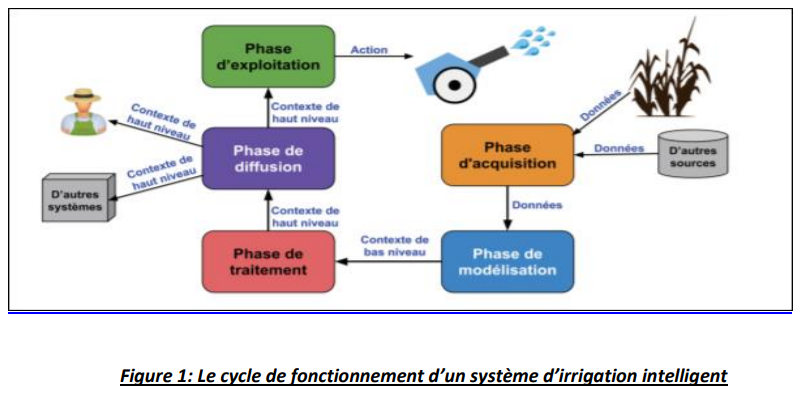

Définitions des systèmes d’irrigation intelligents :
Nous proposons d’adopter les définitions suivantes:
- “Un système contextuel est un système qui utilise le contexte pour fournir des infor- mations et des services appropriés à l’utilisateur. Il convient de noter que la pertinence d’une information ou d’un service dépend de la tâche réalisée par l’utilisateur.” (Abowd et al., 1999
-
“Un système contextuel adaptatif est un système contextuel capable de modifier son
comportement en fonction des changements du contexte de l’application” (Efstratiou, 2004). Par
exemple, un système de gestion des inondations en charge de la surveil- lance d’un bassin versant
est un système contextuel adaptatif s’il envoie des alertes à ses utilisateurs pour les informer des
risques de crues et s’il modifie la fréquence de communication de ses noeuds en fonction de ces
risques (Sun et al., 2016). Le contexte dans ce type de système est défini comme “l’ensemble des
informations util- isées pour caractériser la situation d’une entité. Une entité peut être une
personne, un lieu ou un objet jugé pertinent dans les interactions entre l’utilisateur et
l’application”(Abowd et al., 1999). Deux types de contexte sont définis (Sun, 2017):
- Le contexte de bas niveau contient des données quantitatives telles que les mesures issues de capteurs.
- Le contexte de haut niveau, quant à lui, est constitué des données qualitatives qui sont spécifiées en fonction des objectifs de l’application. Un exemple de contexte de haut niveau pour un système d’irrigation automatique est l’état des parcelles agricoles : lorsqu’une parcelle atteint l’état «sol sec», le système déclenche une action d’irrigation.
Un système contextuel adaptatif pour l’irrigation est composé de trois composantes spéci- fiques:
un réseau de capteurs sans fil (RCSF) en charge de la surveillance de l’environnement; un outil d’aide à la décision (OAD) pour envoyer des notifications aux agriculteurs afin de les aider dans leurs décisions d’irrigation et contrôler un système d’irrigation automatique et enfin le système d’irrigation. Le cycle de fonctionnement d’un système contextuel se découpe en quatre phases : (1) l’acquisition du contexte ; (2) la modélisation du contexte ; (3) le raisonnement sur le con- texte ; et (4) la diffusion du contexte (Perera et al., 2014). Dans un système contextuel adap- tatif, une phase supplémentaire est ajoutée pour que le système s’adapte aux changements decontexte. Par conséquent, le cycle de fonctionnement de ce système comprends cinq phases (Sun, 2017). La figure 1 présente une illustration du cycle de fonctionnement d’un système contextuel adaptatif dédié à notre cas d’usage sur l’irrigation automatique à Montoldre. Ce cas sera sera présenté plus en détail dans la section 3). Ainsi le cycle de fonctionnement est composé de 5 phases:
- Phase d’acquisition du contexte : au cours de cette phase, le système acquiert des données brutes provenant de diverses sources. La principale source de données est le réseau de capteurs sans fils qui mesure,collecte et transmet des mesures brutes. De plus, des données collectées par les stations de météo locale (Roussey et al., 2014) sont aussi transmises au système.
- Phase de modélisation du contexte : les données brutes sont annotées pour pouvoir être intégrées. Ces données sont organisées dans un modèle pour devenir un contexte de bas niveau. Dans le cas d’usage de Montoldre, nous sélectionons les ontologies SSN et SAREF comme deux candidats pour modéliser le contexte.
- Phase de traitement du contexte : au cours de cette phase, un raisonnement est appliqué sur le contexte de bas niveau afin de déduire un contexte de haut niveau. Pour le raisonnement, un moteur à base de règles peut être utilisé.
- Phase de diffusion du contexte : le contexte de haut niveau est distribué aux composants du système ou à d’autres systèmes. Par exemple, le contexte de haut niveau est une entrée de l’ OAD de pilotage de l’irrigation.
- Phase d’exploitation du contexte : dans cette phase, le système exploite le contexte pour prendre une décision et lancer une action comme lancer l’irrigation. Le système peut aussi modifier le comportement de ces composants afin qu’ils s’adaptent aux change- ments du contexte. Par exemple, pendant une forte pluie, le système demande aux nœuds du réseau de passer en mode veille car le système n’aura pas besoin de nou- velles mesures d’humidité du sol suite à la pluie.
